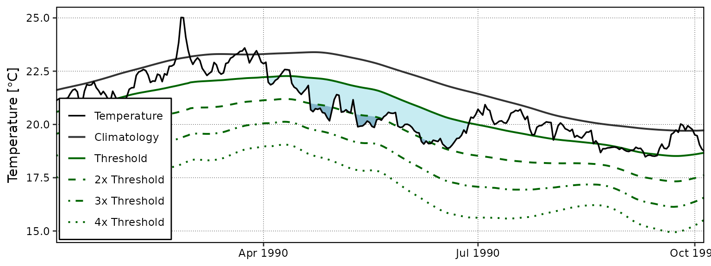
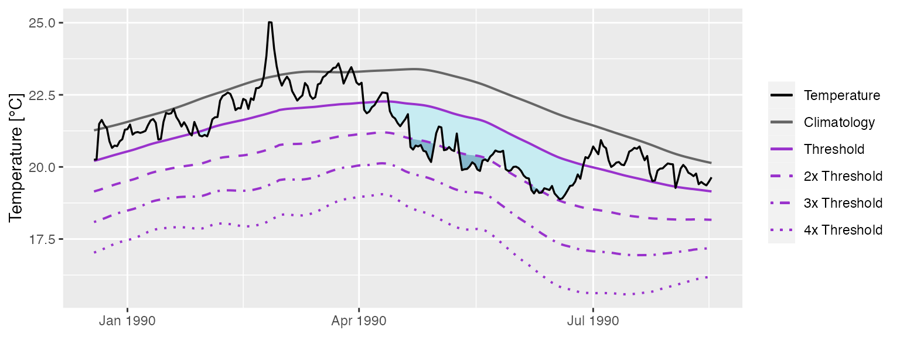
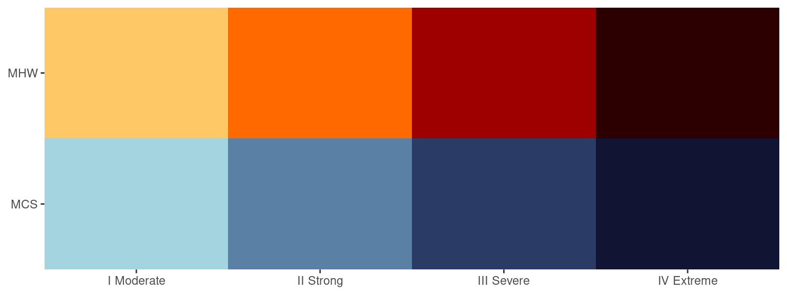

Calculating and Visualising Event Categories
Robert W Schlegel
2020-12-16
Source:vignettes/event_categories.Rmd
event_categories.RmdCategories
In Hobday et al. (2018) a naming convention for MHWs was proposed that divides them into four categories based on their maximum observed intensity. The naming convention and a brief description are as follows:
| Category | Description |
|---|---|
| I Moderate | Events that have been detected, but with a maximum intensity that does not double the distance between the seasonal climatology and the threshold value. These are common and not terribly worrisome. |
| II Strong | Events with a maximum intensity that doubles the distance from the seasonal climatology to the threshold, but does not triple it. These are not uncommon, but have yet to be shown to cause any long term biological or ecological damage. |
| III Severe | Thankfully these are relatively uncommon as they have been linked to damaging events. The 2003 Mediterranean MHW was this category. |
| IV Extreme | Events with a maximum intensity that is four times or greater than the aforementioned distance. These events are currently rare, but are projected to increase with frequency. This is troubling as events in this category are now well documented as causing widespread and lasting ecological damage. The 2011 Western Australia MHW was this category. It is also the logo of this package. |
Calculating MHW categories
The categories of MHWs under the Hobday et al. (2018) naming scheme may be calculated with the heatwaveR package using the category() function on the output of the detect_event() function. By default this function will order events from most to least intense. Note that one may control the output for the names of the events by providing ones own character string for the name argument. Because we have calculated MHWs on the Western Australia data, we provide the name “WA” below:
# Load libraries
library(dplyr)
library(tidyr)
library(ggplot2)
library(heatwaveR)
# Calculate events
ts <- ts2clm(sst_WA, climatologyPeriod = c("1982-01-01", "2011-12-31"))
MHW <- detect_event(ts)
MHW_cat <- category(MHW, S = TRUE, name = "WA")
# Look at the top few events
tail(MHW_cat)## # A tibble: 6 x 11
## event_no event_name peak_date category i_max duration p_moderate p_strong
## <int> <fct> <date> <chr> <dbl> <dbl> <dbl> <dbl>
## 1 60 WA 2012b 2012-12-31 II Stro… 3.42 14 64 36
## 2 29 WA 1999 1999-05-22 II Stro… 3.64 95 63 37
## 3 47 WA 2009 2009-03-25 II Stro… 2.38 7 57 43
## 4 72 WA 2015 2015-10-02 II Stro… 2.46 7 57 43
## 5 41 WA 2008a 2008-04-14 III Sev… 3.83 35 57 23
## 6 52 WA 2011a 2011-02-28 IV Extr… 6.58 105 52 27
## # … with 3 more variables: p_severe <dbl>, p_extreme <dbl>, season <chr>Note that this functions expects the data to have been collected in the southern hemisphere, hence the argument S = TRUE. If they were not, one must set S = FALSE as seen in the example below. This ensures that the correct seasons are attributed to the event.
res_Med <- detect_event(ts2clm(sst_Med, climatologyPeriod = c("1982-01-01", "2011-12-31")))
res_Med_cat <- category(res_Med, S = FALSE, name = "Med")
tail(res_Med_cat)## # A tibble: 6 x 11
## event_no event_name peak_date category i_max duration p_moderate p_strong
## <int> <fct> <date> <chr> <dbl> <dbl> <dbl> <dbl>
## 1 60 Med 2011d 2011-09-15 II Stro… 2.94 7 57 43
## 2 30 Med 2003a 2003-06-20 II Stro… 5.05 30 53 47
## 3 67 Med 2012b 2012-08-20 II Stro… 4.32 18 44 56
## 4 93 Med 2018a 2018-04-21 II Stro… 3.34 14 43 57
## 5 46 Med 2007c 2007-04-25 III Sev… 4.05 19 42 53
## 6 75 Med 2014 2014-10-18 II Stro… 3.34 144 39 60
## # … with 3 more variables: p_severe <dbl>, p_extreme <dbl>, season <chr>Visualising MHW categories
Default MHW category visuals
A quick and easy visualisation of the categories of a MHW may be accomplished with event_line() by setting the category argument to TRUE.
event_line(MHW, spread = 100, start_date = "2010-11-01", end_date = "2011-06-30", category = TRUE)
Custom MHW category visuals
Were one to want to visualise the categories of a MHW ‘by hand’, the following code will provide a good starting point.
# Create category breaks and select slice of data.frame
clim_cat <- MHW$clim %>%
dplyr::mutate(diff = thresh - seas,
thresh_2x = thresh + diff,
thresh_3x = thresh_2x + diff,
thresh_4x = thresh_3x + diff) %>%
dplyr::slice(10580:10690)
# Set line colours
lineColCat <- c(
"Temperature" = "black",
"Climatology" = "gray20",
"Threshold" = "darkgreen",
"2x Threshold" = "darkgreen",
"3x Threshold" = "darkgreen",
"4x Threshold" = "darkgreen"
)
# Set category fill colours
fillColCat <- c(
"Moderate" = "#ffc866",
"Strong" = "#ff6900",
"Severe" = "#9e0000",
"Extreme" = "#2d0000"
)
ggplot(data = clim_cat, aes(x = t, y = temp)) +
geom_flame(aes(y2 = thresh, fill = "Moderate")) +
geom_flame(aes(y2 = thresh_2x, fill = "Strong")) +
geom_flame(aes(y2 = thresh_3x, fill = "Severe")) +
geom_flame(aes(y2 = thresh_4x, fill = "Extreme")) +
geom_line(aes(y = thresh_2x, col = "2x Threshold"), size = 0.7, linetype = "dashed") +
geom_line(aes(y = thresh_3x, col = "3x Threshold"), size = 0.7, linetype = "dotdash") +
geom_line(aes(y = thresh_4x, col = "4x Threshold"), size = 0.7, linetype = "dotted") +
geom_line(aes(y = seas, col = "Climatology"), size = 0.7) +
geom_line(aes(y = thresh, col = "Threshold"), size = 0.7) +
geom_line(aes(y = temp, col = "Temperature"), size = 0.6) +
scale_colour_manual(name = NULL, values = lineColCat,
breaks = c("Temperature", "Climatology", "Threshold",
"2x Threshold", "3x Threshold", "4x Threshold")) +
scale_fill_manual(name = NULL, values = fillColCat, guide = FALSE) +
scale_x_date(date_labels = "%b %Y") +
guides(colour = guide_legend(override.aes = list(linetype = c("solid", "solid", "solid",
"dashed", "dotdash", "dotted"),
size = c(0.6, 0.7, 0.7, 0.7, 0.7, 0.7)))) +
labs(y = "Temperature [°C]", x = NULL)
Calculating MCS categories
MCSs are calculated the same as for MHWs. The category() function will automagically detect if it has been fed MHWs or MCSs so no additional arguments are required. For the sake of clarity the following code chunks demonstrates how to calculate MCS categories.
# Calculate events
ts_MCS <- ts2clm(sst_WA, climatologyPeriod = c("1982-01-01", "2011-12-31"), pctile = 10)
MCS <- detect_event(ts_MCS, coldSpells = T)
MCS_cat <- category(MCS, S = TRUE, name = "WA")
# Look at the top few events
tail(MCS_cat)## # A tibble: 6 x 11
## event_no event_name peak_date category i_max duration p_moderate p_strong
## <int> <fct> <date> <chr> <dbl> <dbl> <dbl> <dbl>
## 1 15 WA 1990 1990-05-11 II Stro… -3.19 76 62 38
## 2 53 WA 2005 2005-10-16 II Stro… -1.86 13 62 38
## 3 75 WA 2017b 2017-08-20 II Stro… -2.73 37 59 41
## 4 80 WA 2018 2018-08-15 II Stro… -2.90 63 57 43
## 5 74 WA 2017a 2017-07-05 II Stro… -3.54 21 48 52
## 6 11 WA 1987 1987-12-10 II Stro… -2.50 9 44 56
## # … with 3 more variables: p_severe <dbl>, p_extreme <dbl>, season <chr>Visualising MCS categories
Default MCS category visuals
The event_line() function also works for visualising MCS categories. The function will automagically detect that it is being fed MCSs so we do not need to provide it with any new arguments. Note that the colour palette for MCS does have four colours, same as for MHWs, but none of the demo time series that come packaged with heatwaveR have MCSs that intense so we are not able to demonstrate the full colour palette here.
event_line(MCS, spread = 100, start_date = "1989-11-01", end_date = "1990-06-30", category = TRUE) ### Custom MHW category visuals
The following code chunk demonstrates how to manually create a figure showing the MCS categories.
# Create category breaks and select slice of data.frame
MCS_clim_cat <- MCS$clim %>%
dplyr::mutate(diff = thresh - seas,
thresh_2x = thresh + diff,
thresh_3x = thresh_2x + diff,
thresh_4x = thresh_3x + diff) %>%
dplyr::slice(2910:3150)
# Set line colours
lineColCat <- c(
"Temperature" = "black",
"Climatology" = "gray20",
"Threshold" = "darkgreen",
"2x Threshold" = "darkgreen",
"3x Threshold" = "darkgreen",
"4x Threshold" = "darkgreen"
)
# Set category fill colours
fillColCat <- c(
"Moderate" = "#A4D4E0",
"Strong" = "#5B80A6",
"Severe" = "#2A3C66",
"Extreme" = "#111433"
)
ggplot(data = MCS_clim_cat, aes(x = t, y = temp)) +
geom_flame(aes(y = thresh, y2 = temp, fill = "Moderate")) +
geom_flame(aes(y = thresh_2x, y2 = temp, fill = "Strong")) +
geom_flame(aes(y = thresh_3x, y2 = temp, fill = "Severe")) +
geom_flame(aes(y = thresh_4x, y2 = temp, fill = "Extreme")) +
geom_line(aes(y = thresh_2x, col = "2x Threshold"), size = 0.7, linetype = "dashed") +
geom_line(aes(y = thresh_3x, col = "3x Threshold"), size = 0.7, linetype = "dotdash") +
geom_line(aes(y = thresh_4x, col = "4x Threshold"), size = 0.7, linetype = "dotted") +
geom_line(aes(y = seas, col = "Climatology"), size = 0.7) +
geom_line(aes(y = thresh, col = "Threshold"), size = 0.7) +
geom_line(aes(y = temp, col = "Temperature"), size = 0.6) +
scale_colour_manual(name = NULL, values = lineColCat,
breaks = c("Temperature", "Climatology", "Threshold",
"2x Threshold", "3x Threshold", "4x Threshold")) +
scale_fill_manual(name = NULL, values = fillColCat, guide = FALSE) +
scale_x_date(date_labels = "%b %Y") +
guides(colour = guide_legend(override.aes = list(linetype = c("solid", "solid", "solid",
"dashed", "dotdash", "dotted"),
size = c(0.6, 0.7, 0.7, 0.7, 0.7, 0.7)))) +
labs(y = "Temperature [°C]", x = NULL) ## Category colour palettes
For the sake of convenience the MHW and MCS colour palettes are provided below with a figure showing the direct comparison.
# The MCS colour palette
MCS_colours <- c(
"Moderate" = "#A4D4E0",
"Strong" = "#5B80A6",
"Severe" = "#2A3C66",
"Extreme" = "#111433"
)
# The MHW colour palette
MHW_colours <- c(
"Moderate" = "#ffc866",
"Strong" = "#ff6900",
"Severe" = "#9e0000",
"Extreme" = "#2d0000"
)
# Create the colour palette for plotting by itself
colour_palette <- data.frame(category = factor(c("I Moderate", "II Strong", "III Severe", "IV Extreme"),
levels = c("I Moderate", "II Strong", "III Severe", "IV Extreme")),
MHW = c(MHW_colours[1], MHW_colours[2], MHW_colours[3], MHW_colours[4]),
MCS = c(MCS_colours[1], MCS_colours[2], MCS_colours[3], MCS_colours[4])) %>%
pivot_longer(cols = c(MHW, MCS), names_to = "event", values_to = "colour")
# Show the palettes side-by-side
ggplot(data = colour_palette, aes(x = category, y = event)) +
geom_tile(fill = colour_palette$colour) +
coord_cartesian(expand = F) +
labs(x = NULL, y = NULL)